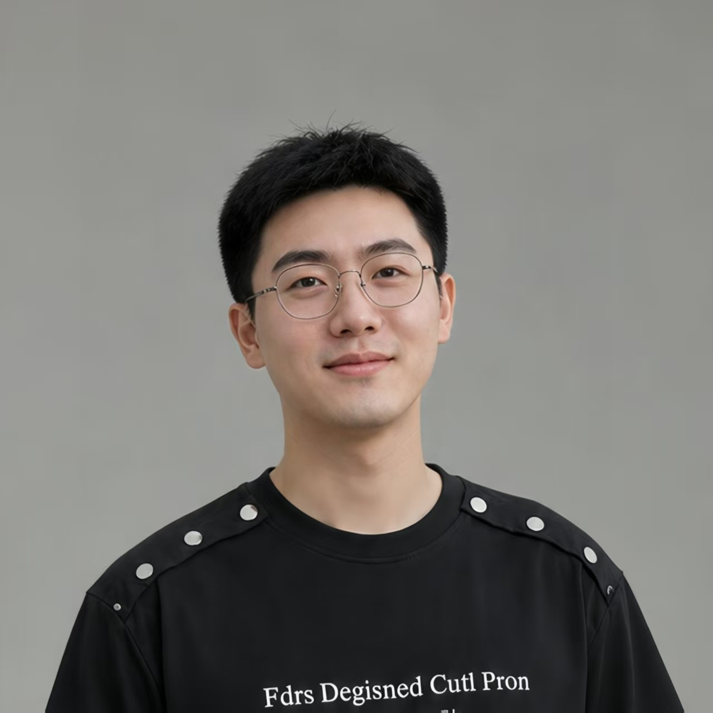

尊重个体
从不同经历与目标出发。
了解品牌故事、协作理念和服务角色。历史与人物内容均为参考站演示。
关注个人背景与未来方向，把复杂的准备过程拆成清晰的步骤。
本区内容取自参考站，仅作样稿演示，不代表派桥留学真实经历、团队、服务承诺或业绩。
以公开参考站的品牌发展与服务架构为样稿，展示从初步咨询到申请协作的完整内容。派桥的实际品牌介绍将在后续替换确认。
原站历程演示 · 并非派桥实际成立时间或发展记录。
从初期咨询开始建立服务流程。
参考站历程演示形成材料清单和准备节点。
参考站历程演示逐步细化不同角色的分工。
参考站历程演示加入背景与项目要求的对照。
参考站历程演示探索更清楚的协作安排。
参考站历程演示把申请各阶段连接起来。
参考站历程演示整理不同方向的参考材料。
参考站历程演示讨论更多教育与发展资源。
参考站历程演示以清晰的信息、认真的准备和可追踪的协作，连接每一步。
从不同经历与目标出发。
明确节点、任务与进展。
所有事实与成果应可核对。
及时讨论变化与下一步。
人物照片取自参考站，只用于展示卡片效果，不代表派桥实际师资。
整理现有背景，讨论申请地区、院校层次和时间安排。
整理现有背景，讨论申请地区、院校层次和时间安排。
整理现有背景，讨论申请地区、院校层次和时间安排。
通过访谈梳理经历，连接专业动机、能力证据和未来计划。
通过访谈梳理经历，连接专业动机、能力证据和未来计划。
通过访谈梳理经历，连接专业动机、能力证据和未来计划。
核对材料、填写要求与递交状态，跟进院校补件信息。
核对材料、填写要求与递交状态，跟进院校补件信息。
核对材料、填写要求与递交状态，跟进院校补件信息。
围绕面试表达、签证文件及行前事项提供专项准备。

围绕面试表达、签证文件及行前事项提供专项准备。
围绕面试表达、签证文件及行前事项提供专项准备。
从一次申请出发，持续关注学习目标与下一阶段的方向。
连接信息与个人目标，探索适合的下一步。
连接信息与个人目标，探索适合的下一步。
连接信息与个人目标，探索适合的下一步。